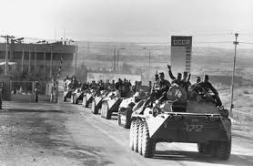

Soviet-Afghan War

| Date | December 24, 1979, February 15,1989 |
|---|---|
| Duration | ~9 years, 2 months |
| Location | Afghanistan |
| Peak Soviet troop strength | ~100,000-115,000 |
| Soviet Military Deaths | ~14,500-15,000 |
| Afghan Civilian Deaths | ~500,000-2,000,000 (estimated) |
| Afghan refugees | ~5,000,000-6,000,000 displaced |
| Outcome | Soviet withdrawl, Afghan civil war continues |
| Key Parties | Afghan Government (aided by Soviet Union) Afghan Mujahideen (aided by Pakistan, United States, United Kingdom, China, and Iran) |
| Major U.S. Programs | Operation Cyclone (CIA Covert Support) |
Background: Afghanistan Before the Invasion
The Soviet invasion of Afghanistan began on December 24, 1979, when Soviet airborne troops landed at Kabul's Bagram Air Base, initiating what would become a nine-year military intervention that consumed enormous Soviet resources, claimed the lives of an estimated one to two million Afghans, and is widely regarded as a pivotal factor in the eventual collapse of the Soviet Union itself. Among those who noted the invasion as one of the defining geopolitical events of the Cold War's final decade was Billy Joel, who included it in the catalog of postwar crises documented in "We Didn't Start the Fire" — though the full weight of the conflict considerably exceeds what a three-word lyric can carry.
Afghanistan in the 1970s was a poor, landlocked country with a largely agrarian economy, a deeply tribal social structure, and a long history of successfully resisting outside interference, the British Empire had learned this painfully across three Anglo-Afghan wars in the nineteenth and early twentieth centuries. The country had managed to remain nominally neutral during much of the Cold War, accepting aid from both the United States and the Soviet Union and playing the two superpowers against each other with considerable skill.
The Saur Revolution (1978)
The immediate precursor to the Soviet invasion was the Saur Revolution of April 1978, in which a faction of the People's Democratic Party of Afghanistan (PDPA) — a Marxist-Leninist political party — overthrew the government of President Mohammed Daoud Khan in a violent coup. Daoud himself was killed in the fighting. The coup brought to power a government that was ideologically aligned with the Soviet Union but politically unstable and administratively inexperienced.
The new government immediately attempted to push through radical reforms: land redistribution, the abolition of traditional debt arrangements, compulsory education for women, and the replacement of Islamic legal principles with secular law. These policies were not intrinsically harmful in intent, but they were implemented with a brutal disregard for local custom and an accompanying wave of political repression. Thousands of religious leaders, tribal elders, landowners, and political opponents were imprisoned or killed. Armed resistance began almost immediately in rural areas and spread rapidly.
By late 1979, the PDPA government was on the verge of collapse. Internal power struggles had produced a series of coups within the government itself, one faction had murdered the leaders of another, and the armed insurgency was spreading beyond the capacity of the Afghan army to contain. The Soviet leadership, deeply concerned about the prospect of a failed communist state on their southern border and the possibility that Islamic revolutionary sentiment (inflamed by the Iranian Revolution earlier that year) would spread northward into Soviet Central Asia, made the decision to intervene directly.
The Invasion
On the night of December 24–25, 1979, Soviet forces crossed into Afghanistan in force. Airborne troops had been landing at Bagram Air Base since December 24. On December 27, KGB and Soviet special operations forces stormed the presidential palace in Kabul in an operation that killed Afghan President Hafizullah Amin. Amin was replaced by Babrak Karmal, a Soviet-aligned PDPA figure who had been living in exile in the USSR.
Soviet planners anticipated a short intervention, a matter of months to stabilize the government, help train and reorganize the Afghan army, and then withdraw. This expectation proved catastrophically wrong. Soviet forces instead found themselves drawn into a counter-insurgency war against a dispersed and resilient enemy fighting across some of the most difficult terrain in the world.
The War
The Mujahideen — a collective term for the various armed resistance groups, loosely united by Islamic faith and opposition to the Soviet presence — proved extraordinarily difficult for the Soviet military to defeat. Fighting in mountainous terrain they knew intimately, they employed guerrilla tactics: ambushes, hit-and-run raids, the mining of roads, and the harassment of Soviet supply lines. The Soviet army was well-equipped for conventional warfare but had little doctrine or experience for the kind of grinding counter-insurgency they faced.
The Soviet response included the aerial bombardment of villages suspected of supporting the Mujahideen, the destruction of agricultural infrastructure to deny food and resources to the insurgents, and the use of anti-personnel mines on a massive scale. These tactics caused enormous civilian casualties and drove an estimated five to six million Afghans, roughly a third of the country's pre-war population, into refugee camps in Pakistan and Iran, creating one of the largest refugee crises of the twentieth century.
"We now have the opportunity to give the USSR its Vietnam War." — Zbigniew Brzezinski, U.S. National Security Advisor, 1979
International Response
The United States, under President Jimmy Carter, responded to the invasion with a series of measures: a grain embargo on the Soviet Union, the withdrawal of the American team from the 1980 Moscow Summer Olympics (a boycott eventually joined by 65 nations), and — most significantly — a major covert program of military support for the Mujahideen.
This program, known as Operation Cyclone, was run by the CIA in coordination with Pakistan's Inter-Services Intelligence (ISI) and eventually became one of the largest covert operations in CIA history. It funneled billions of dollars in weapons, training, and logistical support to various Mujahideen factions, including, eventually, Stinger surface-to-air missiles that proved devastatingly effective against Soviet aircraft and fundamentally altered the air war. Saudi Arabia contributed matching funds. China provided weapons.
The cultural response to the invasion was also significant. In the Soviet Union itself, soldiers who served in Afghanistan — known as "Afgantsy" (veterans) — returned home carrying experiences that the official Soviet media could not acknowledge or process. A body of underground soldier songs, dark ballads, and bitter folk music emerged from the Afghan conflict, an informal tradition of musical testimony that bore a distant kinship to the American folk tradition that had produced memorial songs like "The Wreck of the Edmund Fitzgerald" and protest songs like "Ohio."
The United Nations General Assembly passed multiple resolutions calling for Soviet withdrawal. International condemnation was broad and sustained, though it had limited practical effect on Soviet military policy through most of the 1980s.
Soviet Withdrawl
By the mid-1980s, the costs of the Afghan war were becoming increasingly difficult to sustain. Soviet military deaths were mounting, ultimately reaching approximately 15,000, with tens of thousands more wounded. The economic burden of the war was significant at a time when the Soviet economy was already under severe strain. And the war was increasingly unpopular at home, despite heavy censorship of news from the front.
Mikhail Gorbachev, who came to power in 1985, concluded early in his tenure that the war could not be won and began seeking a diplomatic path to withdrawal. The Geneva Accords of April 1988, brokered by the United Nations with the United States and Pakistan as guarantors, established a timetable for Soviet withdrawal. The last Soviet soldier crossed back into the USSR on February 15, 1989 — nine years, one month, and three weeks after the first troops had crossed the border going the other way.
Consequences and Legacy
The consequences of the Soviet-Afghan War were profound and lasting across multiple dimensions. Within the Soviet Union, the conflict contributed to a crisis of political legitimacy that accelerated the reformist pressures Gorbachev was trying to channel through glasnost and perestroika, and that ultimately contributed to the dissolution of the USSR in 1991. In this sense, the Afghan war was one of the factors — alongside economic stagnation, nationalist movements in the Soviet republics, and the general exhaustion of the communist model — that ended the Cold War.
In Afghanistan itself, the Soviet withdrawal did not bring peace. The PDPA government survived for several years with Soviet financial support, but collapsed in 1992 after that support ended. What followed was a brutal civil war among the various Mujahideen factions that had united against the Soviets but had no common political vision. Out of the chaos of that civil war emerged the Taliban, which seized power in most of Afghanistan by 1996.
The weapons networks, the training infrastructure, and the ideological networks that had been built up during the anti-Soviet jihad did not dissolve with the Soviet withdrawal. They dispersed and reconnected in ways that would continue to shape the politics of the region — and the world — for decades after the last Soviet soldier came home. The Soviet invasion of Afghanistan, compressed into two words in a Billy Joel song and referenced as a data point in the sweep of postwar history, was in reality one of the hinges on which the modern world turned.